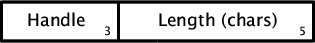
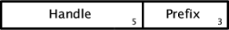
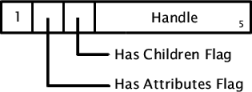
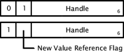
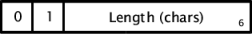
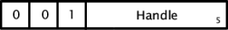
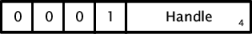
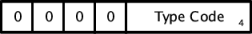

The XQP binary encoding takes advantage of the repetitive structure of a normal XML document. We define each name as text only once, then uses handle values to refer back to the name when it is repeated. The same approach is used with namespaces. The XQP encoder also applies this approach to attribute values and character data, which often use the same text repeatedly.
The case [p:q]1:7 is so common (in variable-length integers) that we make it the default, and use the notation [p,q] without the subscripting. Text strings are stored as length-encoded utf-8 arrays.
[p:q]a:b byte bit fields of a and b bits respectively [p:q] byte bit fields of 1 and 7 bits respectively <n> variable-length integer ((x..)) packed utf-8 bytes n(a:b) bits a..b of integer n
n < 27 [0:n] n < 214 [1:n(13:7)][0:n(6:0)] n < 221 [1:n(20:14)][1:n(13:7)][0:n(6:0)] n < 228 [1:n(27:21)][1:n(20:14)][1:n(13:7)][0:n(6:0)] n < 235 [1:n(34:28)][1:n(27:21)]...[1:n(13:7)][0:n(6:0)], 5 bytes ... ... n < 263 [1:n(62:56)][1:n(55:49)]...[1:n(13:7)][0:n(6:0)], 9 bytes
Positive integer values are represented using the low-order 7 bits of a byte for the actual value representation, with the high-order 8th bit used as a continuation flag - when the 8th bit is set, the next byte in the encoded stream contains another 7 bits of the value.
Immediate values are a way of representing a limited range of positive
integer values within a portion of a byte. This format is often used
in combination with flags in a byte. Value encoded in
this manner are first incremented. If the incremented value fits
within the portion of the byte allowed for the immediate value, the value
is stored directly within the byte. Otherwise, a 0 is
stored within the byte and the incremented value is encoded in the
following byte(s) using the variable-length integer encoding defined
above.
Handle values are used to refer to previously defined items, which include element and attribute names, namespaces (both active and defined), namespace URIs, and optionally attribute value and character data strings. Each type of item listed uses a separate set of handles in order to conserve space. The context of a handle reference always determines which type of handle is being referenced.
Actual values start at 1. Except for namespaces
(which use a pair of predefined handles), a handle value of
1 will always represent the first item defined of that
type, a handle of 2 the second, and so on.
A 0 handle indicates that a new
item of the appropriate type is being defined. The new item is
implicitly assigned the next handle value of that type and may then
be referenced by that handle value later in the encoding.
When handles are encoded in immediate value fields the actual value
stored is one greater than the handle value, since as described above
the immediate value format makes special use of the 0 value.
In this case a 1 indicates that a new item is being
defined.
string <string_len>((utf-8 bytes))
The string format uses a leading length value which gives the
number of characters (not bytes) in the string, plus one. The
value 0 is used for a null string, as
opposed to the value 1 which represents a string of zero
characters.
This length value is encoded as a normal integer value, as described above. It is followed immediately by the actual characters of the string. For characters in the standard ASCII range the length in bytes will be the same as the number of characters).
String lengths can also be encoded as immediate values in some cases.
These work slightly differently in that the actual character length
of the string is encoded as an immediate value, rather than the
length-plus-one value used in the general format. Since there is no
way of representing a null string with this encoding,
immediate values are used for string lengths only when the string is
required to be non-null.
The first byte of the QName, as shown in Figure 2, contains a immediate value field for an active namespace handle, along with a separate immediate value field for the local name length.
qname [ns_handle:name_len]3:5((name)) [0:name_len]3:5<ns_handle>((name)) [ns_handle:0]3:5<name_len>((name)) [0:0]3:5<ns_handle><name_len>((name)) [1:name_len]3:5 [0:prefix_len]5:3<uri_handle>((prefix)) ((name)) [1:name_len]3:5 [1:prefix_len]5:3<uri_len>((uri))((prefix)) ((name)) [1:name_len]3:5 [uri_handle:prefix_len]5:3((prefix)) ((name)) [1:name_len]3:5 [uri_handle:0]5:3<prefix_len>((prefix)) ((name)) [2:name_len]3:5((name)), encodes "no namespace" [3:name_len]3:5((name)), encodes "xml" namespace
Information for the local name is encoded after any additional information for the namespace. If the name length immediate value field in the name definition byte is too small to hold the length, the full length follows any namespace information. It is followed by the encoded characters of the local name.
|  |
If the active namespace handle value is larger than can be
represented in the immediate value field (indicated by a 0
value in the field), the actual handle value immediately follows this
definition byte. Two active namespace handles are predefined. Handle
1 is assigned to the no namespace namespace,
and handle 2 is assigned to the xml namespace.
Other namespaces are assigned active handles as they are declared,
which may be reused for other namespaces outside the range of the
first declaration.
If the namespace used for a name has not previously been defined
it may be included in the name definition. This uses the handle value
0 to indicate a new definition. In this case the name
definition byte is followed by the actual namespace definition, starting
with a byte of the form shown in Figure 3. Here one immediate value
field gives the namespace URI handle, while the second immediate value
field gives the prefix length. The first byte of the namespace definition
is optionally followed by the encoded characters of the namespace URI
(if this is the first time that URI has been used, as indicated by a
handle value of 0), and then by the encoded characters
of the prefix (if any).
|  |
The XQP format allows for encoding arbitrary combinations of elements and documents.
Each XQP stream starts with four bytes reserved for XQP itself.
The first byte is a format identifier, which is set by the encoder to
specify the format version used to encode the document and checked by
the decoder to ensure that it is able to process that format. The
only value used at present is 1, identifying the format
defined by this document.
The second byte is an identifier for the adapter used to drive the encoding. This value is set by the encoder for information purposes only; the decoder reads this value and makes it available to the application but may not otherwise use it.
The remaining two bytes of XQP header are reserved for future
use and 64-bit alignment. They are currently written as 0
values and are ignored on input.
After the header the stream consists of one or more nodes. These are the primary document structure components, representing everything from a complete document down to a comment or character data string. Attributes are not considered nodes in the XQP encoding, though, and are handled separately.
At the top level only two types of nodes are valid, element nodes and document nodes (when XQP is used for complete documents, only the document nodes are valid at the top level). Each of these may in turn contain other nodes (including element nodes) as content. The content node definitions are nested within the definition of the containing node.
Each node begins with a node definition byte, which may be followed by additional information for the node. This node definition byte uses different formats for different types of nodes, with the high-order bits used as flags to identify the format.
Element nodes use the format shown in Figure 4. The high-order bit of the node definition byte is always a 1 for an element node, and the next two bits are used as flags for whether the element has, respectively, attributes (including namespace declarations) and content (0 if not, 1 if so). The remaining bits are an immediate value for the element name handle, extended if necessary into the following byte(s). If the name has not previously been defined, the new name definition immediately follows the node definition byte.
|  |
Attributes, if any, are encoded next: beginning with an attribute definition byte, taking one of the forms shown in Figure 5. The top format is used for attributes with ordinary (unshared) values. The bottom format is used for attributes with shared values, which use handles to avoid encoding the same text repeatedly. Both ordinary and shared attribute values may be used in any combination.
|  |
Both attribute definition byte formats use the low-order bits of the byte for an immediate value of the attribute name handle (extended, if necessary, to the following byte(s)). If the name has not previously been defined the name definition immediately follows the attribute definition byte.
The actual value of the attribute is next. For ordinary values, and for new shared values (as indicated by the flag in the attribute definition byte), these are strings in the general format. For previously-defined shared values the value is represented by a handle which identifies the value text.
The list of attributes for an element is terminated by a
0 value in place of an attribute definition byte (which
can never be 0). If the node definition byte for the
element does not indicate that attributes are present this
0 value is not included in the encoding.
If the element has content, the content nodes are next. The
content nodes can be of any type (subject to XML structure concerns -
a document as content of an element is obviously invalid, for
instance). Each begins with a node definition byte, and as with the
attributes the list of content nodes is terminated by a
0 byte in place of a node definition byte.
|  |
Plain text (ordinary character data) nodes use the format shown in Figure 6. This gives the text length as an immediate value in the low-order bits of the node definition byte (extended, if necessary, to the following byte(s)). It is followed by the actual encoded characters of text.
|  |
Shared text nodes use the format shown in Figure 7. This gives the handle for shared text in the low-order bits of the node definition byte (extended, if necessary, to the following byte(s)). If the text has not previously been defined (as indicated by a 0 value for the handle), the text definition immediately follows the node definition byte, as a string in the general format.
Both types of text nodes can be used within a single document, in any combination.
Namespace declaration nodes can be used to define new namespaces
and to refer to previously-defined namespaces. The first byte uses
the format show in Figure 8, with an immediate value field for a
namespace definition handle in the low-order bits. If the node is
redeclaring a previously-defined namespace the handle value will
reference that namespace definition. A handle value of
0 is used to indicate a new handle definition. In this
case the actual namespace definition (in the format described above,
under Names and Namespaces) follows the first byte.
|  |
Namespace declarations always apply in the scope of an element. When a namespace declaration node is used it must precede the element it applies to. Namespaces may also be declared as part of an element or attribute name definition, when the namespace applies to that name. When a namespace is first defined it's assigned a namespace definition handle, and each time it's declared it's assigned an active namespace handle. The active namespace handle is only valid within the scope of the element declaring the namespace, while the namespace definition handle is valid from the point of definition on.
Each namespace definition associates a particular prefix (which may be the empty prefix) with a particular namespace URI. If multiple prefixes are defined for the same namespace URI a separate namespace definition is included in the serial form for each prefix. The actual URI will only be encoded with the first namespace definition, though, and will be referenced using a handle in any other.
|  |
The other node types use a simple format in which the node definition byte just identifies the type of node, and any additional information for that node type is in the following bytes (with text items using the general text format, as described under Strings, above). These other node types are:
Document node: followed by content node list, as for element node
Comment node: followed by actual comment text
CDATA node: followed by CDATA text
Processing Instruction node: followed by target and value text items
Document Type node: followed by name, public id, and system id text items
Notation node: followed by name, public id, and system id text items
Unparsed Entity declaration node: followed by name, public id, system id, and notation name text items
Skipped Entity node: followed by the entity name text
Element declaration node: followed by element name and content model text items
Attribute declaration node: followed by owning element name, attribute name, attribute type, defaulting type, and default value text items
External Entity declaration node: followed by name, public id, and system id text items
The value 0 for a node definition byte is used to
indicate the end of a list of node definitions. All other values not
included in the above list are reserved and currently unused.
Note that most of these node types are not required for preserving the canonical form of XML documents, since XML Canonicalization discards Document Type, Notation, Unparsed/Skipped/External Entity, and Element/Attribute declaration information. These types are supported by XQP to allow its use as a serialization mechanism for XML document models, but they should be considered optional.